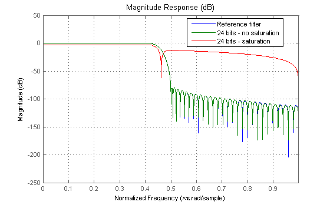

As filter designers begin to use digital filters in applications where power limitations and size constraints drive the filter design, they move from double-precision, floating-point filters to fixed-point filters. This demo showcases how to analyze the quantization effects introduced by such a conversion using discrete-time filter objects (DFILT).
For this demo, we will design a lowpass FIR filter using the window method.
b = fir1(101, .45, 'low', kaiser(102, 7.8573));
The Filter Design Toolbox adds an Arithmetic property to DFILT objects that provides a straight-forward way to analyze the filter not only in double precision floating-point but also in single precision floating-point and fixed-point arithmetic.
h = dfilt.dffir(b)
h =
FilterStructure: 'Direct-Form FIR'
Arithmetic: 'double'
Numerator: [1x102 double]
ResetBeforeFiltering: 'on'
States: [101x1 double]
NumSamplesProcessed: 0
set(h,'Arithmetic') % Returns possible values
ans =
{}
With the Fixed-Point Toolbox installed, the Arithmetic of the filter can be set to 'fixed' to turn quantization on. Additional properties are then added dynamically to the DFILT object. The get function always returns the complete list of property/value pairs.
h.Arithmetic = 'fixed';
get(h)
ResetBeforeFiltering: 'on'
NumSamplesProcessed: 0
FilterStructure: 'Direct-Form FIR'
States: [101x1 embedded.fi]
Numerator: [1x102 double]
Arithmetic: 'fixed'
CoeffWordLength: 16
CoeffAutoScale: 1
Signed: 1
RoundMode: 'convergent'
OverflowMode: 'wrap'
InputWordLength: 16
InputFracLength: 15
OutputWordLength: 16
OutputMode: 'AvoidOverflow'
ProductMode: 'FullPrecision'
AccumMode: 'KeepMSB'
NumFracLength: 16
OutputFracLength: 8
ProductWordLength: 32
ProductFracLength: 31
AccumWordLength: 40
AccumFracLength: 31
CastBeforeSum: 1
The display of the object enhances the readability of the list of properties by grouping them together in a logical manner. Notice that only the writable properties are displayed. Also some properties such as CoeffAutoScale control the display of others (e.g. NumFracLength). The next section discusses such coupling between properties and shows how to make a read-only property writeable.
h
h =
FilterStructure: 'Direct-Form FIR'
Arithmetic: 'fixed'
Numerator: [1x102 double]
ResetBeforeFiltering: 'on'
States: [101x1 embedded.fi]
NumSamplesProcessed: 0
CoeffWordLength: 16
CoeffAutoScale: true
Signed: true
InputWordLength: 16
InputFracLength: 15
OutputWordLength: 16
OutputMode: 'AvoidOverflow'
ProductMode: 'FullPrecision'
AccumMode: 'KeepMSB'
AccumWordLength: 40
CastBeforeSum: true
RoundMode: 'convergent'
OverflowMode: 'wrap'
To determine the number of bits being used to represent the coefficients, we simply look at the CoeffWordlength property.
h.CoeffWordLength
ans =
16
To determine how the coefficients are being scaled, we can look at the NumFracLength property.
h.NumFracLength
ans =
16
This tells us that 16 bits are being used to represent the coefficients, and the least-significant bit (LSB) is weighed by 2^(-16).
16 bits is just the default number used for coefficients word length but to understand the scaling, we can look at the CoeffAutoScale state.
h.CoeffAutoScale % Returns a logical true
ans =
1
When the CoeffAutoScale property is true, the fraction length of the coefficients is adjusted automatically to avoid overflow each time the coefficient word length changes. Let's verify this by changing the number of bits used to quantize the coefficients.
h.CoeffWordLength = 24;
h.NumFracLength
ans =
24
The 2^(-24) weight has been computed automatically to represent the coefficients with the best precision possible.
Setting the CoeffAutoScale property to false turns the NumFracLength property writeable and visible in the display.
h1 = copy(h); % Keep a copy of the original object for latter comparison
h1.CoeffAutoScale = false
h1 =
FilterStructure: 'Direct-Form FIR'
Arithmetic: 'fixed'
Numerator: [1x102 double]
ResetBeforeFiltering: 'on'
States: [101x1 embedded.fi]
NumSamplesProcessed: 0
CoeffWordLength: 24
CoeffAutoScale: false
NumFracLength: 24
Signed: true
InputWordLength: 16
InputFracLength: 15
OutputWordLength: 16
OutputMode: 'AvoidOverflow'
ProductMode: 'FullPrecision'
AccumMode: 'KeepMSB'
AccumWordLength: 40
CastBeforeSum: true
RoundMode: 'convergent'
OverflowMode: 'wrap'
The quantized coefficients are always rounded to the nearest value and saturated if overflow occurs. Because the fraction length was chosen to avoid overflow, increasing the fraction length will saturate the quantized coefficients and introduce a severe distorsion to the magnitude response.
h1.NumFracLength = 25;
Let's visualize the effect of coefficients saturation on the magnitude response of the filter.
href = reffilter(h); % Reference double-precision floating-point filter. hfvt = fvtool(href,h,h1); set(hfvt,'ShowReference','off'); % Reference already displayed once legend(hfvt, 'Reference filter', '24 bits - no saturation', '24 bits - saturation') set(hfvt, 'Color', [1 1 1])
Once the coefficients have been quantized, one needs to pay attention to the filter internal settings that govern how the arithmetic is done inside the filter. For the rest of the demo, we will use a classic 16 bits word length.
h.CoeffWordLength = 16;
Two properties (ProductMode and AccumMode) help simulate different scenarios in the multipliers and adders. Setting these properties to full precision allows us to determine the minimum resources required to avoid any loss of precision.
h.ProductMode = 'FullPrecision'; % (default) [h.ProductWordLength h.ProductFracLength]
ans =
32 31
h.AccumMode = 'FullPrecision';
[h.AccumWordLength h.AccumFracLength]
ans =
39 31
Given an input format of [16 15] and coefficients format of [16 16], this tells us that we need a product register twice the size of the coefficients (or twice the size of the input) and an accumulator register with 7 guard bits to allow for bit growth during the accumulation process. This also tells us the position of the binary point in those registers.
Starting from that ideal scenario one can introduce constraints on either the product or the accumulator register or both. The KeepMSB mode sets the fraction lengths automatically to avoid overflows while the KeepLSB mode sets the fraction lengths automatically to avoid underflows. Finally, the SpecifyPrecision mode allows full control of the settings. One will need to run the filter to see the effect of these settings on the output. For further discussion on product and accumulator settings, see the "Fixed-point filtering with direct-form FIR filters" demo.
See also dffirfxptdemo.m